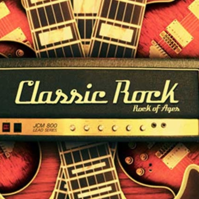

Nuestros Géneros
Tres mundos sonoros, infinitas historias.
Rock Clásico

Guitarras que desgajan el cielo, baterías que golpean como el trueno
y voces que no pedían permiso. La era dorada del rock en formato físico:
desde los primeros pressings de vinilo hasta ediciones especiales en CD.
Artistas destacados
- Led Zeppelin
- The Beatles
- Pink Floyd
- The Rolling Stones
- Jimi Hendrix
Ver productos de Rock Clásico
Rock Alternativo

Guitarras que desgajan el cielo, baterías que golpean como el trueno
y voces que no pedían permiso. La era dorada del rock en formato físico:
desde los primeros pressings de vinilo hasta ediciones especiales en CD.
Artistas destacados
- Radiohead
- David Bowie
- Portishead
- Massive Attack
- Björk
Ver productos de Rock Alternativo
Jazz & Soul

El lenguaje más honesto de la música: improvisación, sentimiento y
profundidad sin límites. Del bebop al free jazz, del soul de Detroit
al gospel del sur. Discos que no suenan, sino que respiran.
Artistas destacados
- Miles Davis
- John Coltrane
- Aretha Franklin
- Bill Evans
- Nina Simone
Ver productos de Jazz & Soul
R&B

El ritmo que mueve el cuerpo y el alma. Desde los orígenes del rhythm and blues
hasta las fusiones contemporáneas con hip-hop y pop. Discos que son más que música:
son declaraciones de estilo, identidad y cultura.
Artistas destacados
- The Weeknd
- Prince
- Marvin Gaye
- Whitney Houston
- Michael Jackson
Ver productos de R&B
Música Clásica

Las sinfonías, conciertos y sonatas que han definido la historia de la música.
Desde los vinilos de pasta hasta las ediciones de lujo en CD, cada formato
es un portal a la grandeza de compositores como Beethoven, Mozart y Bach.
Artistas destacados
- Ludwig van Beethoven
- Wolfgang Amadeus Mozart
- Johann Sebastian Bach
- Frédéric Chopin
- Pyotr Ilyich Tchaikovsky
Ver productos de Música Clásica
Cumbia

El ritmo que une a toda América Latina. Desde las cumbias clásicas de Colombia
hasta las fusiones modernas con electrónica y hip-hop. Discos que no solo se escuchan,
sino que se bailan, se sienten y se viven.
Artistas destacados
- Carlos Vives
- La Sonora Dinamita
- Los Ángeles Azules
- Gustavo "Cucho" Parra
- Totó la Momposina
Ver productos de Cumbia